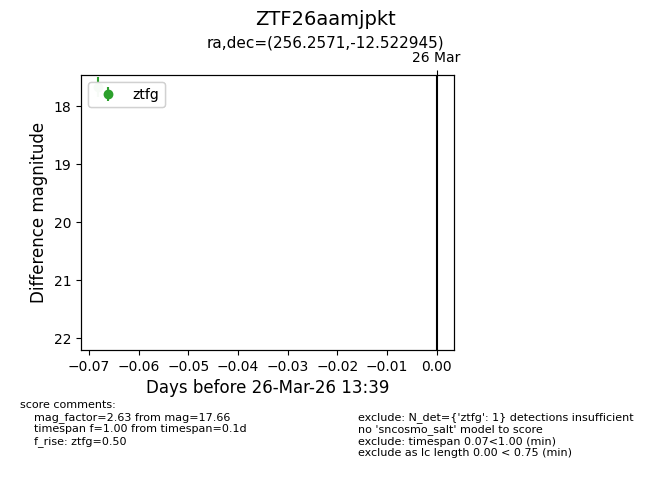
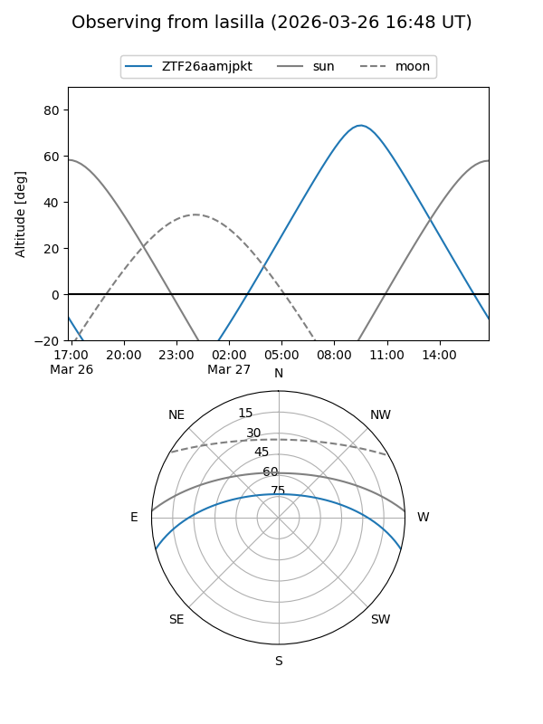
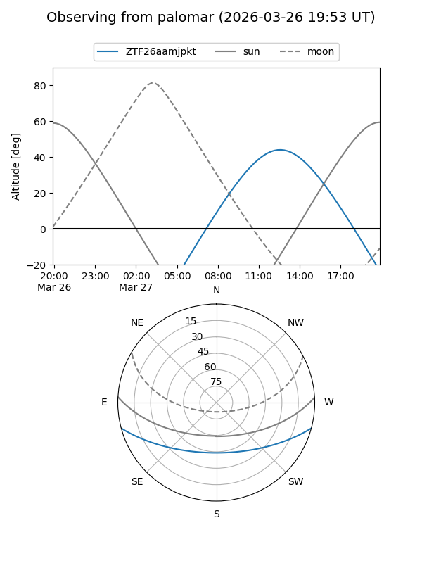

ZTF26aamjpkt
Target ZTF26aamjpkt at 2026-03-26 13:41
Aliases and brokers:
FINK: link
Lasair: link
ALeRCE: link
alt names
ZTF26aamjpkt (ztf,fink_ztf)
Coordinates:
equatorial (ra, dec) = 256.2571,-12.52295
equatorial (HMS+DMS) = 17:05:01.70,-12:31:22.60
galactic (l, b) = (8.7305,+16.86877)
Flags:
Photometry:
last ztfg=17.66
1 ztfg detections
Lightcurve

Visibility


Additional plots